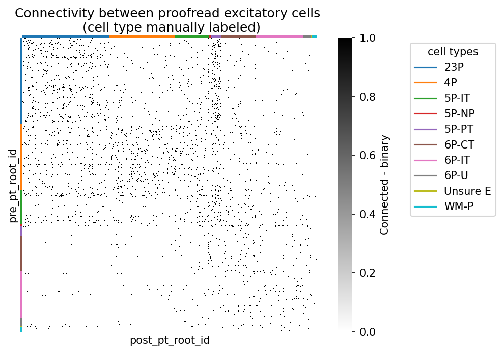
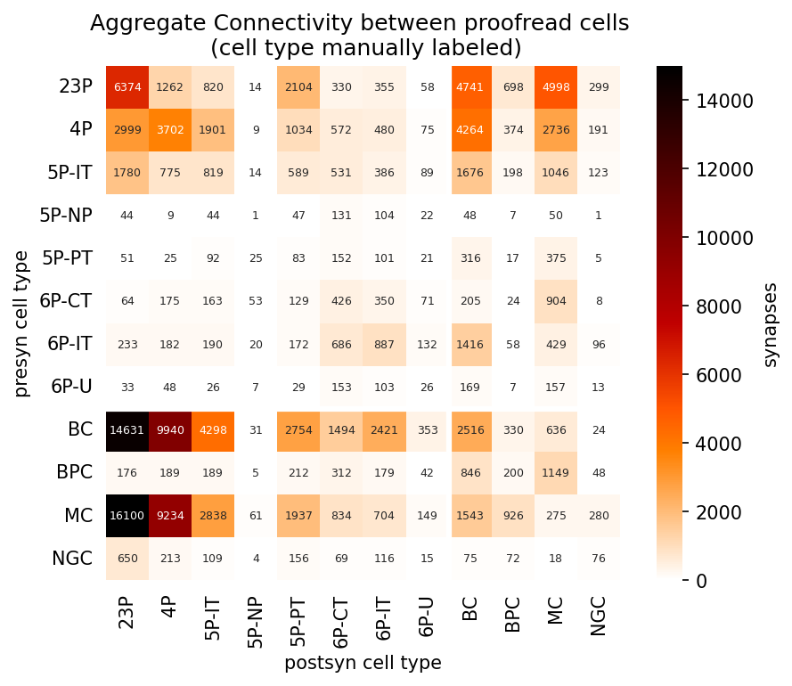

import pandas as pd
import numpy as np
from matplotlib import pyplot as plt
import seaborn as sns
from caveclient import CAVEclient
client = CAVEclient("minnie65_public")CAVE Query: Synaptic Connectivity
The Connectome Annotation Versioning Engine (CAVE) is a suite of tools developed at the Allen Institute and Seung Lab to manage large connectomics data.
Initial Setup
Before using any programmatic access to the data, you first need to set up your CAVEclient token.
The connectome data (synapses, cell types, etc.) can be accessed from the cloud via CAVE. However, because of the size of the connectivity tables, it is often preferable to download and compile the features of interest (in this case synapses) to work with offline. This notebook steps through downloading the synapses of the proofread neurons, as of materialization version 1300.
Quickstart
It is recommended you have worked through the CAVE Quickstart notebook, as this tutorial builds on knowledge in the previous notebook.
Initialize CAVEclient with a datastack
Datasets in CAVE are organized as datastacks. These are a combination of an EM dataset, a segmentation and a set of annotations. The datastack for MICrONS public release is minnie65_public. When you instantiate your client with this datastack, it loads all relevant information to access it.
Materialization versions
Data in CAVE is timestamped and periodically versioned - each (materialization) version corresponds to a specific timestamp. Individual versions are made publicly available. The Materialization client allows one to interact with the materialized annotation tables that were posted to the annotation service. These are called queries to the dataset, and available from client.materialize. For more, see the CAVEclient Documentation.
Periodic updates are made to the public datastack, which will include updates to the available tables. Some cells will have different pt_root_id because they have undergone proofreading.
Tip
For analysis consistency, is worth checking the version of the data you are using, and consider specifying the version with client.version = your_version
Read more about setting the version of your analysis
client.materialize.get_versions()[1300, 1078, 117, 661, 343, 1181, 795, 943]And these are their associated timestamps (all timestamps are in UTC):
for version in client.materialize.get_versions():
print(f"Version {version}: {client.materialize.get_timestamp(version)}")Version 1300: 2025-01-13 10:10:01.286229+00:00
Version 1078: 2024-06-05 10:10:01.203215+00:00
Version 117: 2021-06-11 08:10:00.215114+00:00
Version 661: 2023-04-06 20:17:09.199182+00:00
Version 343: 2022-02-24 08:10:00.184668+00:00
Version 1181: 2024-09-16 10:10:01.121167+00:00
Version 795: 2023-08-23 08:10:01.404268+00:00
Version 943: 2024-01-22 08:10:01.497934+00:00The client will automatically query the latest materialization version. You can specify a materialization_version for every query if you want to access a specific version.
# set materialization version, for consistency
client.version = 1300 # current public as of 1/13/2025Querying Synapses
While synapses are stored as any other table in the database, in this case synapses_pni_2, this table is much larger than any other table at more than 337 million rows:
client.materialize.get_annotation_count('synapses_pni_2')337312429While we can query the synapse table directly, this is generally not recommended. It is too large to query all at once. CAVE limits to queries to 500,000 rows at once and will display a warning when that happens. Here, we demonstrate this with the limit set to 10:
synapse_table_name = client.info.get_datastack_info()["synapse_table"]
syn_df = client.materialize.query_table(synapse_table_name, limit=10, desired_resolution=[1, 1, 1], split_positions=True)
syn_df| id | created | superceded_id | valid | pre_pt_position_x | pre_pt_position_y | pre_pt_position_z | post_pt_position_x | post_pt_position_y | post_pt_position_z | ctr_pt_position_x | ctr_pt_position_y | ctr_pt_position_z | size | pre_pt_supervoxel_id | pre_pt_root_id | post_pt_supervoxel_id | post_pt_root_id | |
|---|---|---|---|---|---|---|---|---|---|---|---|---|---|---|---|---|---|---|
| 0 | 482324897 | 2020-11-04 06:48:58.343057+00:00 | NaN | t | 1476448.0 | 850856.0 | 620360.0 | 1476288.0 | 850376.0 | 620400.0 | 1476192.0 | 850648.0 | 620360.0 | 2976 | 115495518947404152 | 864691135035312593 | 115495450227928501 | 864691134965890572 |
| 1 | 111356912 | 2020-11-04 06:48:58.343057+00:00 | NaN | t | 591184.0 | 555056.0 | 675880.0 | 591104.0 | 555408.0 | 675960.0 | 591152.0 | 555200.0 | 676000.0 | 2976 | 85086257273159206 | 864691135557293342 | 85086257339729644 | 864691137053640566 |
| 2 | 219362361 | 2020-11-04 06:48:58.343057+00:00 | NaN | t | 865496.0 | 482488.0 | 662320.0 | 864912.0 | 482048.0 | 661920.0 | 865192.0 | 482288.0 | 662000.0 | 2976 | 94513263810944271 | 864691135595450728 | 94513195091453796 | 864691135204272683 |
| 3 | 350226388 | 2020-11-04 06:48:58.343057+00:00 | NaN | t | 1173304.0 | 349688.0 | 992960.0 | 1173240.0 | 349448.0 | 992800.0 | 1173232.0 | 349616.0 | 992840.0 | 2976 | 105064109745413552 | 864691136216863455 | 105064109745412680 | 864691136774161774 |
| 4 | 292350246 | 2020-11-04 06:48:58.343057+00:00 | NaN | t | 1029376.0 | 421024.0 | 1059200.0 | 1029232.0 | 421336.0 | 1058880.0 | 1029336.0 | 421280.0 | 1059040.0 | 2976 | 100140703036155312 | 864691135628516419 | 100140703036140569 | 864691132041695465 |
| 5 | 164940667 | 2020-11-04 06:48:58.343057+00:00 | NaN | t | 728984.0 | 575104.0 | 620400.0 | 729032.0 | 574904.0 | 620040.0 | 729072.0 | 574824.0 | 620400.0 | 2976 | 89801650193255101 | 864691135375598409 | 89801650193247746 | 864691136175511558 |
| 6 | 261934954 | 2020-11-04 06:48:58.343057+00:00 | NaN | t | 960512.0 | 747088.0 | 778120.0 | 960600.0 | 747560.0 | 778400.0 | 960600.0 | 747352.0 | 778280.0 | 2976 | 97759091191496793 | 864691136296744475 | 97759091258050193 | 864691135404420078 |
| 7 | 47809213 | 2020-11-04 06:48:58.343057+00:00 | NaN | t | 443488.0 | 848552.0 | 684400.0 | 443848.0 | 848512.0 | 684600.0 | 443576.0 | 848496.0 | 684440.0 | 2976 | 80029534644397607 | 864691135585163343 | 80029534644408014 | 864691135379785202 |
| 8 | 65519860 | 2020-11-04 06:48:58.343057+00:00 | NaN | t | 500232.0 | 633600.0 | 1039280.0 | 500424.0 | 633344.0 | 1038960.0 | 500380.0 | 633448.0 | 1039080.0 | 5960 | 81992645077294792 | 864691136156246677 | 81992645077283850 | 864691136817302638 |
| 9 | 446835682 | 2020-11-04 06:48:58.343057+00:00 | NaN | t | 1401536.0 | 596288.0 | 708680.0 | 1401744.0 | 596096.0 | 708720.0 | 1401648.0 | 596136.0 | 708520.0 | 2976 | 112953654491063415 | 864691136538026146 | 112953654491055747 | 864691134020263786 |
Instead, you have several options for querying cells of interest:
- Specifying the
pre_ids - Specifying the
post_ids - Searching within a
bounding_box - Using a combination of the above to iterate through large numbers of neurons
Query synapses given pt_root_id of interest
The synapse_query function allows you to query the synapse table in a more convenient way than most other tables. In particular, the pre_ids and post_ids let you specify which root id (or collection of root ids) you want to query, with pre_ids indicating the collection of presynaptic neurons and post_ids the collection of postsynaptic neurons.
Using both pre_ids and post_ids in one call is effectively a logical AND, returning only those synapses from neurons in the list of pre_ids that target neurons in the list of post_ids.
Let’s look at one particular example.
# Pick example cell
example_root_id = 864691135808473885
# Query synapse table with synapse_query()
input_syn_df = client.materialize.synapse_query(post_ids=example_root_id)
print(f"Total number of input synapses for {example_root_id}: {len(input_syn_df)}")
input_syn_df.head()Total number of input synapses for 864691135808473885: 4628| id | created | superceded_id | valid | size | pre_pt_supervoxel_id | pre_pt_root_id | post_pt_supervoxel_id | post_pt_root_id | pre_pt_position | post_pt_position | ctr_pt_position | |
|---|---|---|---|---|---|---|---|---|---|---|---|---|
| 0 | 165943687 | 2020-11-04 06:48:59.403833+00:00 | NaN | t | 6068 | 89667372671545980 | 864691135522708676 | 89667372671554898 | 864691135808473885 | [181250, 191912, 18361] | [181278, 191844, 18364] | [181276, 191873, 18366] |
| 1 | 155169887 | 2020-11-04 06:49:11.336675+00:00 | NaN | t | 964 | 88540717118418517 | 864691135412525042 | 88540717051854108 | 864691135808473885 | [172816, 186434, 19971] | [172892, 186468, 19969] | [172821, 186483, 19965] |
| 2 | 175655972 | 2020-11-04 06:48:59.403833+00:00 | NaN | t | 260 | 90230391344454185 | 864691136711146862 | 90160022600247406 | 864691135808473885 | [184962, 192380, 18359] | [184836, 192448, 18366] | [184916, 192396, 18359] |
| 3 | 159676064 | 2020-11-04 06:48:59.876707+00:00 | NaN | t | 14460 | 89385691939052008 | 864691135773033723 | 89385691939060896 | 864691135808473885 | [178870, 190176, 21429] | [178870, 190204, 21437] | [178878, 190132, 21434] |
| 4 | 169597812 | 2020-11-04 06:49:11.962249+00:00 | NaN | t | 7164 | 89598584945119102 | 864691135459877874 | 89598584945109756 | 864691135808473885 | [180636, 203654, 21957] | [180706, 203762, 21963] | [180680, 203716, 21959] |
# Query synapse table with synapse_query()
output_syn_df = client.materialize.synapse_query(pre_ids=example_root_id)
print(f"Total number of output synapses for {example_root_id}: {len(output_syn_df)}")
output_syn_df.head()Total number of output synapses for 864691135808473885: 1498| id | created | superceded_id | valid | size | pre_pt_supervoxel_id | pre_pt_root_id | post_pt_supervoxel_id | post_pt_root_id | pre_pt_position | post_pt_position | ctr_pt_position | |
|---|---|---|---|---|---|---|---|---|---|---|---|---|
| 0 | 162136319 | 2020-11-04 14:43:13.226680+00:00 | NaN | t | 2064 | 89174654291344339 | 864691135808473885 | 89174654291351817 | 864691136057875416 | [177614, 190930, 19985] | [177692, 190868, 19997] | [177678, 190900, 19993] |
| 1 | 158405512 | 2020-11-04 06:48:59.403833+00:00 | NaN | t | 420 | 89385416926790697 | 864691135808473885 | 89385416926797494 | 864691135546540484 | [179076, 188248, 20233] | [179156, 188220, 20239] | [179140, 188230, 20239] |
| 2 | 185549462 | 2020-11-04 06:49:10.903020+00:00 | NaN | t | 4832 | 91356016507479890 | 864691135808473885 | 91356016507470163 | 864691135884799088 | [193168, 190452, 19262] | [193142, 190404, 19257] | [193180, 190432, 19254] |
| 3 | 138110803 | 2020-11-04 06:49:46.758528+00:00 | NaN | t | 3176 | 87263084540201919 | 864691135808473885 | 87263084540199587 | 864691135060075931 | [163440, 104292, 19808] | [163498, 104348, 19806] | [163460, 104356, 19804] |
| 4 | 157378264 | 2020-11-04 07:38:27.332669+00:00 | NaN | t | 412 | 89374490395905686 | 864691135808473885 | 89374490395921430 | 864691135446953106 | [179218, 107132, 19372] | [179204, 107010, 19383] | [179196, 107072, 19380] |
Note that synapse queries always return the list of every synapse between the neurons in the query, even if there are multiple synapses between the same pair of neurons.
A common pattern to generate a list of connections between unique pairs of neurons is to group by the root ids of the presynaptic and postsynaptic neurons and then count the number of synapses between them. For example, use pandas.groupby() to get the number of synapses from this neuron onto every other neuron:
# get count of synapses between presynaptic and postsynaptic partners
output_syn_df.groupby(
['pre_pt_root_id', 'post_pt_root_id']
).count()[['id']].rename(
columns={'id': 'syn_count'}
).sort_values(
by='syn_count',
ascending=False,
)
# Note that the 'id' part here is just a way to quickly extract one column. This could be any of the remaining column names,
# but `id` is often convenient because it is common to all tables.| syn_count | ||
|---|---|---|
| pre_pt_root_id | post_pt_root_id | |
| 864691135808473885 | 864691135280056225 | 20 |
| 864691135617649257 | 16 | |
| 864691134949547516 | 15 | |
| 864691135784316467 | 13 | |
| 864691136275521549 | 11 | |
| ... | ... | |
| 864691136913679601 | 1 | |
| 864691136923311076 | 1 | |
| 864691136923570404 | 1 | |
| 864691136924123364 | 1 | |
| 864691136973673244 | 1 |
1035 rows × 1 columns
Query synapses given bounding_box of interest
The synapse_query() can find all synapses in an arbitrary space of the volume. This is useful if, for example, you want to find all synapses in a radius around one synapse of interest, such as for building a null-model of connectivity based on proximity.
bounding_box = [[min_x, min_y, min_z], [max_x, max_y, max_z]]
df=client.materialize.query_table(post_ids = example_root_id,
bounding_box=bounding_box)For more details, see the CAVEclient documentation. Also compare to bounding box downloads through cloud-volume in the next quickstart notebooks.
Query proofread cells and connectivity
Proofread neurons
The table proofreading_status_and_strategy contains proofreading information about ~2000 neurons. For more on interpretting and using the proofreading table, see the previous quickstart notebook.
Here we query all neurons in the dataset that have proofread axons
proof_df = client.materialize.tables.proofreading_status_and_strategy(status_axon='t').query(desired_resolution=[1, 1, 1], split_positions=True)
proof_df["strategy_axon"].value_counts()strategy_axon
axon_partially_extended 1459
axon_interareal 130
axon_fully_extended 127
none 7
Name: count, dtype: int64Query synapses between proofread neurons
We can query the graph spanned by the neurons with proofread axons using synapse query.
Tip
Here we specify both the pre_ids and post_ids, meaning we will only be interpretting the connectivity between cells that both have proofread axons. This makes plotting the square connectivity matrix easier.
However, connectivity between two cells is generally interpretable even if only the presynaptic cell has axon proofreading. Meaning, you can remove the post_ids argument in the section below, and still have interpretable data.
%%time
# This takes 3-5 minutes to complete
syn_proof_only_df = client.materialize.synapse_query(pre_ids=proof_df.pt_root_id,
post_ids=proof_df.pt_root_id,
remove_autapses=True,
)
print(len(syn_proof_only_df))158931
CPU times: total: 609 ms
Wall time: 3min 25sPlot connectivity as binarized heatmap
Now lets plot the connectivity between every proofread cell and every other cell. This uses the pandas.pivot_table() to turn the long-form synapse table into a connectivity matrix.
%%time
# This takes 2 minutes to complete
syn_mat = syn_proof_only_df.pivot_table(index="pre_pt_root_id",
columns="post_pt_root_id",
values="size",
aggfunc=lambda x: float(np.sum(x) > 0)
).fillna(0)
syn_mat = syn_mat.reindex(columns=np.array(syn_mat.index))CPU times: total: 1min 4s
Wall time: 2min 6sPlot the binarized connectivity with Seaborn heatmap():
fig, ax = plt.subplots(figsize=(7, 5), dpi=150)
sns.heatmap(syn_mat, cmap="gray_r", xticklabels=[], yticklabels=[],
ax=ax, square=True,
cbar_kws={"label": "Connected - binary"})
ax.set_title('Connectivity between proofread cells')Text(0.5, 1.0, 'Connectivity between proofread cells')There is some structure of highly interconnected cells. By adding information about the type of cells, we might infer more about the connectivity patterns
Add cell type information to connectivity
Querying cell type information
There are two distinct ways cell types were classified in the MICrONS dataset: manual and automated. Manual annotations are available for ~1,000 neurons (allen_v1_column_types_slanted_ref), automated classifications are available for all cell bodies based on these manual annotations (aibs_metamodel_celltypes_v661). For more about querying cell types tables, see the previous quickstart notebook.
Tip
For more on cell types and how to interpret them, see the Annotation Tables page.
ct_manual_df = client.materialize.tables.allen_v1_column_types_slanted_ref().query()
# rename the reference column for clarity
ct_manual_df.rename(columns={'target_id': 'nucleus_id'}, inplace=True)
# remove segments with multiple cell bodies
ct_manual_df.drop_duplicates("pt_root_id", keep=False, inplace=True)
ct_manual_df.head(5)| id | created | valid | volume | pt_supervoxel_id | pt_root_id | id_ref | created_ref | valid_ref | nucleus_id | classification_system | cell_type | pt_position | bb_start_position | bb_end_position | |
|---|---|---|---|---|---|---|---|---|---|---|---|---|---|---|---|
| 0 | 258319 | 2020-09-28 22:40:42.476911+00:00 | t | 261.806162 | 89309001002848425 | 864691136021936376 | 50 | 2023-03-18 14:13:21.613360+00:00 | t | 258319 | aibs_coarse_excitatory | 23P | [178400, 143248, 21238] | [nan, nan, nan] | [nan, nan, nan] |
| 1 | 276438 | 2020-09-28 22:40:42.700226+00:00 | t | 277.317714 | 89465269428261699 | 864691136487559186 | 1119 | 2023-03-18 14:13:22.506660+00:00 | t | 276438 | aibs_coarse_excitatory | 6P-CT | [179648, 258768, 23597] | [nan, nan, nan] | [nan, nan, nan] |
| 2 | 260552 | 2020-09-28 22:40:42.745779+00:00 | t | 230.111805 | 89170256379033022 | 864691135784109363 | 35 | 2023-03-18 14:13:21.602813+00:00 | t | 260552 | aibs_coarse_excitatory | 23P | [177408, 157968, 21002] | [nan, nan, nan] | [nan, nan, nan] |
| 3 | 260263 | 2020-09-28 22:40:42.746658+00:00 | t | 274.324193 | 88044356338331571 | 864691135694415551 | 95 | 2023-03-18 14:13:21.644304+00:00 | t | 260263 | aibs_coarse_excitatory | 23P | [169440, 158128, 20266] | [nan, nan, nan] | [nan, nan, nan] |
| 4 | 262898 | 2020-09-28 22:40:42.749245+00:00 | t | 230.092308 | 88468836747612860 | 864691135759892302 | 81 | 2023-03-18 14:13:21.634505+00:00 | t | 262898 | aibs_coarse_inhibitory | BPC | [172512, 175280, 21964] | [nan, nan, nan] | [nan, nan, nan] |
This table is a reference on the nucleus_detection_v0 table, and adds two additional data columns: classification_system and cell_type. The classification_system divides the cells into excitatitory and inhibitory neurons as well as non-neuronal cells. cell_type provides lower level cell annotations.
Next, we query the automatically classified cell type information. The query works the same way:
ct_auto_df = client.materialize.tables.aibs_metamodel_celltypes_v661().query()
# rename the reference column for clarity
ct_auto_df.rename(columns={'target_id': 'nucleus_id'}, inplace=True)
# remove segments with multiple cell bodies
ct_auto_df.drop_duplicates("pt_root_id", keep=False, inplace=True)
ct_auto_df.head(5)| id | created | valid | volume | pt_supervoxel_id | pt_root_id | id_ref | created_ref | valid_ref | nucleus_id | classification_system | cell_type | pt_position | bb_start_position | bb_end_position | |
|---|---|---|---|---|---|---|---|---|---|---|---|---|---|---|---|
| 0 | 336365 | 2020-09-28 22:42:48.966292+00:00 | t | 272.488202 | 93606511657924288 | 864691136274724621 | 36916 | 2023-12-19 22:47:18.659864+00:00 | t | 336365 | excitatory_neuron | 5P-IT | [209760, 180832, 27076] | [nan, nan, nan] | [nan, nan, nan] |
| 1 | 110648 | 2020-09-28 22:45:09.650639+00:00 | t | 328.533443 | 79385153184885329 | 864691135489403194 | 1070 | 2023-12-19 22:38:00.472115+00:00 | t | 110648 | excitatory_neuron | 23P | [106448, 129632, 25410] | [nan, nan, nan] | [nan, nan, nan] |
| 2 | 112071 | 2020-09-28 22:43:34.088785+00:00 | t | 272.929423 | 79035988248401958 | 864691136147292311 | 1099 | 2023-12-19 22:38:00.898837+00:00 | t | 112071 | excitatory_neuron | 23P | [103696, 149472, 15583] | [nan, nan, nan] | [nan, nan, nan] |
| 3 | 197927 | 2020-09-28 22:43:10.652649+00:00 | t | 91.308851 | 84529699506051734 | 864691136050858227 | 13259 | 2023-12-19 22:41:14.417986+00:00 | t | 197927 | nonneuron | oligo | [143600, 186192, 26471] | [nan, nan, nan] | [nan, nan, nan] |
| 4 | 198087 | 2020-09-28 22:41:36.677186+00:00 | t | 161.744978 | 83756261929388963 | 864691135809440972 | 13271 | 2023-12-19 22:41:14.685474+00:00 | t | 198087 | nonneuron | astrocyte | [137952, 190944, 27361] | [nan, nan, nan] | [nan, nan, nan] |
ct_auto_df["classification_system"].value_counts()classification_system
excitatory_neuron 63757
nonneuron 18699
inhibitory_neuron 7847
Name: count, dtype: int64ct_auto_df["cell_type"].value_counts()cell_type
23P 19642
4P 14720
6P-IT 11637
5P-IT 7889
astrocyte 7108
oligo 6900
6P-CT 6755
BC 3309
MC 2433
microglia 2394
5P-ET 2157
BPC 1484
OPC 1451
5P-NP 957
pericyte 846
NGC 621
Name: count, dtype: int64We can merge the manual and automatic cell types together into a single cell type table for convenience, using pandas.merge() on shared columns [pt_root_id, nucleus_id]. Here we perform an outer merge to keep rows that exist in either table.
ct_all_df = (pd.merge(ct_auto_df[['pt_root_id','classification_system','cell_type', 'nucleus_id']],
ct_manual_df[['pt_root_id','classification_system','cell_type','nucleus_id']],
on=['pt_root_id','nucleus_id'],
how='outer',
suffixes=['_auto','_manual'],
)
.fillna({'cell_type_auto': 'unknown',
'classification_system_auto': 'unknown',
'cell_type_manual': 'unknown',
'classification_system_manual ': 'unknown',}
)
)
ct_all_df.tail()| pt_root_id | classification_system_auto | cell_type_auto | nucleus_id | classification_system_manual | cell_type_manual | |
|---|---|---|---|---|---|---|
| 90328 | 864691137199039297 | excitatory_neuron | 23P | 293714 | NaN | unknown |
| 90329 | 864691137199050049 | excitatory_neuron | 4P | 194481 | NaN | unknown |
| 90330 | 864691137199094593 | excitatory_neuron | 23P | 361383 | NaN | unknown |
| 90331 | 864691137199115073 | excitatory_neuron | 4P | 260071 | NaN | unknown |
| 90332 | 864691137199116097 | inhibitory_neuron | BC | 372402 | NaN | unknown |
Sorting the synapse matrix with cell types
Let’s combine the synaptic connecitivity with the cell type information. Below we provide logic for sorting a connectivity matrix using a list of labels.
This example looks at the connectivity among: proofread excitatory cells in the V1 column . Using proofreading_status_and_strategy and allen_v1_column_types_slanted_ref to filter the connectivity. The same approach can be used for all cells in the dataset by substituting the cell_type_auto label from aibs_metamodel_celltypes_v661.
def sort_matrix_by_types(mat: pd.DataFrame,
labels: pd.DataFrame,
label_type_col: str = "cell_type_auto",
label_id_col: str = "pt_root_id",
post_labels: pd.DataFrame = None,
post_label_type_col: str = None,
post_label_id_col: str = None):
"""Sorts (synapse) matrix by labels.
This function assumes a square synapse matrix!
Args:
mat: synapse matrix as pandas DataFrame
labels: DataFrame with labels, e.g. the output of client.materialize.query_table('aibs_metamodel_celltypes_v661')
label_type_col: column name in labels for cell types
label_id_col: column name in labels for root ids
post_labels: DataFrame with labels, e.g. the output of client.materialize.query_table('aibs_metamodel_celltypes_v661')
post_label_type_col: column name in labels for cell types
post_label_id_col: column name in labels for root ids
Returns:
mat_sorted: sorted matrix
mat_labels: sorted labels; has the same length as matrix
"""
if post_labels is None:
post_labels = labels
if post_label_type_col is None:
post_label_type_col = label_type_col
if post_label_id_col is None:
post_label_id_col = label_id_col
mat_sorted = mat.copy()
pre_mat_labels = np.array(labels.set_index(label_id_col).loc[mat_sorted.index][label_type_col])
pre_sorting = np.argsort(pre_mat_labels)
post_mat_labels = np.array(post_labels.set_index(post_label_id_col).loc[mat_sorted.T.index][post_label_type_col])
post_sorting = np.argsort(post_mat_labels)
mat_sorted = mat_sorted.iloc[pre_sorting].T.iloc[post_sorting].T
return mat_sorted, pre_mat_labels[pre_sorting], post_mat_labels[post_sorting]# Select the proofread, manually-identified excitatory cells
manual_exc_root_ids = ct_all_df.query("classification_system_manual=='aibs_coarse_excitatory'").pt_root_id.to_numpy()
# Filter the proofread synapses by the excitatory cells
exc_syn_df = syn_proof_only_df.loc[(syn_proof_only_df.pre_pt_root_id.isin(manual_exc_root_ids) &
syn_proof_only_df.post_pt_root_id.isin(manual_exc_root_ids)
)]
# Pivot synapse matrix
exc_syn_mat = (exc_syn_df.pivot_table(index="pre_pt_root_id",
columns="post_pt_root_id",
values="size",
aggfunc=lambda x: float(np.sum(x) > 0)).fillna(0)
)
exc_syn_mat = exc_syn_mat.reindex(columns=np.array(exc_syn_mat.index))# sort the matrix by cell types to render sensibly in heatmap
syn_mat_ct, syn_mat_cell_types, _ = sort_matrix_by_types(exc_syn_mat, ct_all_df, label_type_col="cell_type_manual")Plot cell connectivity, sorted by cell type
import matplotlib
# add colormap for cell type
cts, ct_idx = np.unique(syn_mat_cell_types, return_inverse=True)
ct_colors = plt.get_cmap("tab10")(ct_idx)
fig, ax = plt.subplots(figsize=(7, 5), dpi=150)
sns.heatmap(syn_mat_ct, cmap="gray_r", xticklabels=[], yticklabels=[],
ax=ax, square=True,
cbar_kws={"label": "Connected - binary"})
# add row and column colors for cell types
for i, color in enumerate(ct_colors):
ax.add_patch(plt.Rectangle(xy=(-0.01, i), width=0.01, height=1, color=color, lw=0,
transform=ax.get_yaxis_transform(), clip_on=False))
for i, color in enumerate(ct_colors):
ax.add_patch(plt.Rectangle(xy=(i, 1), height=0.01, width=1, color=color, lw=0,
transform=ax.get_xaxis_transform(), clip_on=False))
# add a legend for the cell types
legend_elements = [matplotlib.lines.Line2D([0], [0], color=plt.get_cmap("tab10")(i), label=ct) for i, ct in enumerate(cts)]
plt.legend(handles=legend_elements, loc='upper left', bbox_to_anchor=(1.3, 1), title="cell types")
ax.set_title('Connectivity between proofread excitatory cells \n (cell type manually labeled)')
plt.show()
Aggregate connectivity across cell types
Sometimes it is more useful to consider connectivity between groups of cells, rather than individual cells–especially as the number of indivudal cells soars into the thousands. In this example we will aggregate synaptic connectivity to broad cell types.
Merge cell types to synapse table
Here, we can assign a cell type to the pre-synaptic and post-synaptic root id on the connectivity matrix. Given the established syn_proof_only_df and the merged cell type table ct_all_df, let’s consider the connectivity between manually identified cell types:
# Merge the cell types to the presynaptic cell id
syn_proof_ct_df = ( syn_proof_only_df.merge(
ct_all_df[['pt_root_id','cell_type_manual']],
left_on='pre_pt_root_id',
right_on='pt_root_id',
how='left' )
.rename(columns={'cell_type_manual': 'cell_type_pre'})
.drop(columns=['pt_root_id'])
)
# Merge the cell types to the postsynaptic cell id
syn_proof_ct_df = ( syn_proof_ct_df.merge(
ct_all_df[['pt_root_id','cell_type_manual']],
left_on='post_pt_root_id',
right_on='pt_root_id',
how='left' )
.rename(columns={'cell_type_manual': 'cell_type_post'})
.drop(columns=['pt_root_id'])
)
syn_proof_ct_df.head(3)| id | created | superceded_id | valid | size | pre_pt_supervoxel_id | pre_pt_root_id | post_pt_supervoxel_id | post_pt_root_id | pre_pt_position | post_pt_position | ctr_pt_position | cell_type_pre | cell_type_post | |
|---|---|---|---|---|---|---|---|---|---|---|---|---|---|---|
| 0 | 152094175 | 2020-11-04 07:20:36.943498+00:00 | NaN | t | 14020 | 88401010355440214 | 864691135778700477 | 88401010355435596 | 864691135561699041 | [171952, 194076, 19787] | [171996, 194038, 19786] | [172002, 194074, 19793] | 23P | MC |
| 1 | 148367619 | 2020-11-04 11:46:41.982682+00:00 | NaN | t | 4880 | 88187223727657156 | 864691136057875416 | 88187223727666196 | 864691135659200386 | [170264, 174184, 17059] | [170378, 174182, 17060] | [170300, 174144, 17052] | unknown | unknown |
| 2 | 174979485 | 2020-11-04 08:50:39.220791+00:00 | NaN | t | 4688 | 90161191099360974 | 864691136057875416 | 90161191099310671 | 864691136674495623 | [184770, 200984, 19986] | [184786, 201052, 19972] | [184816, 200974, 19981] | unknown | 5P-IT |
Pivot the synapse table to collect cell type connectivity
Using pandas.pivot() on the pre- and post-synaptic cell classes, we count the number of connections between:
# Pivot table to get connectivity between cell types
syn_ct_counts = (syn_proof_ct_df.pivot_table(index='cell_type_pre',
columns='cell_type_post',
values='id', aggfunc=lambda x: len(x)).fillna(0)
.drop(columns=['Unsure E','Unsure I','unknown'], index=['Unsure E','Unsure I','unknown'])
.astype(int)
)
# Sort by names
syn_ct_counts = syn_ct_counts.reindex(sorted(syn_ct_counts.columns), axis=1)
syn_ct_counts = syn_ct_counts.reindex(sorted(syn_ct_counts.index), axis=0)
# consistent axis naming
syn_ct_counts = syn_ct_counts.rename_axis(['presyn cell type'], axis=0)
syn_ct_counts = syn_ct_counts.rename_axis(['postsyn cell type'], axis=1)Plot cell connectivity, aggregated by cell type
This now summarizes connectivity between broad cell classes
fig, ax = plt.subplots(figsize=(7, 5), dpi=150)
sns.heatmap(syn_ct_counts, cmap="gist_heat_r", annot=True, ax=ax, fmt='d', vmin=0, vmax=15000,
cbar_kws={'label': 'synapses', 'location': 'right'},
annot_kws={"fontsize":6},
square=True)
ax.tick_params(left=False, bottom=False)
ax.hlines([8], *ax.get_xlim(), color='white',linewidth = 3)
ax.vlines([8], *ax.get_ylim(), color='white',linewidth = 3)
ax.set_title('Aggregate Connectivity between proofread cells \n (cell type manually labeled)')Text(0.5, 1.0, 'Aggregate Connectivity between proofread cells \n (cell type manually labeled)')
Final note
It is worth keeping in mind that this connectivity matrix is highly dependendant on:
- Which set of cell-type labels you include (here: manual labels in the V1 column)
- Which set of proofread cells you include (here: most strict inclusion for pre- and post-synaptic partners)
The more cells are proofread in the dataset, the more consistency and reproducibility you will get from connecitivty diagrams. See VORTEX program to request specific proofreading.